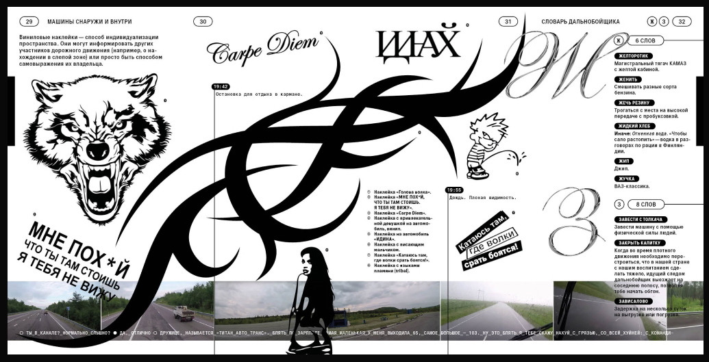
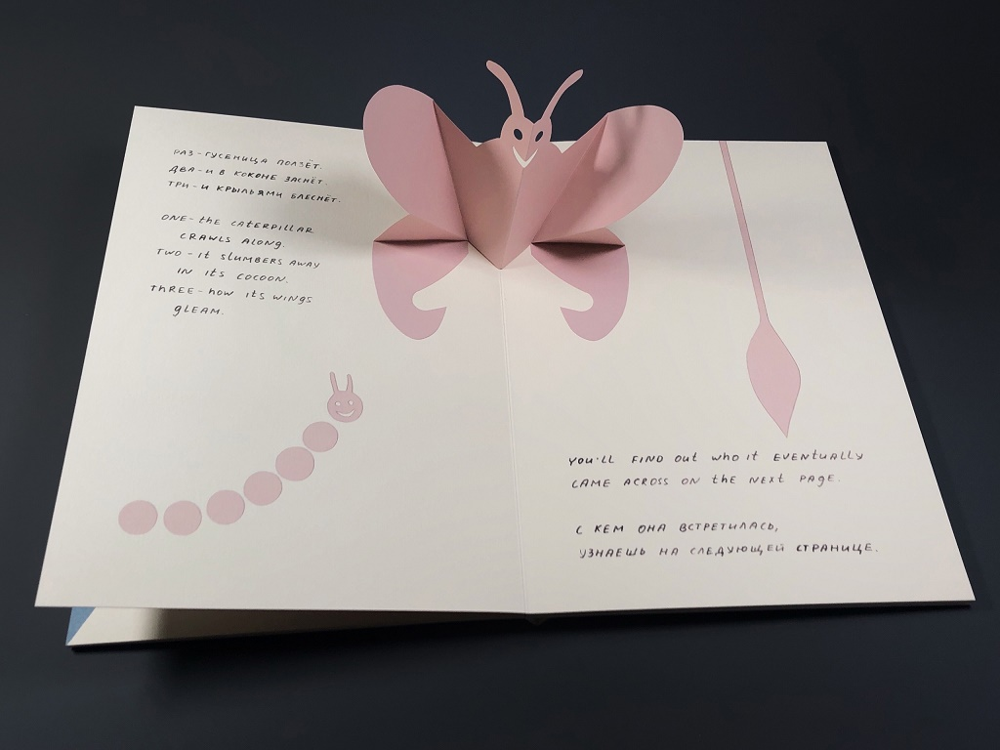

Ориентиры
Эта глава поможет тебе оценивать свой дизайн в процессе и уже в первых работах принимать решения самостоятельно. Поэтому перед тем, как приступить непосредственно к дизайну, пробежимся по нескольким советам.

←
1
Книга про культуру дальнобойщиков
Иллюстрирует подход «дизайнер- мембрана»: мы видим четкое попадание в стиль и эстетику
Подходы в типографике
Вся типографика базируется на тексте, у которого есть собственный нарратив. Она может пойти по двум путям: передавать суть и стилистику текста или отходить от них. В первом случае дизайнер выступает в качестве инструмента (мембраны): он улавливает общий замысел текста и подбирает такие типографические решения, которые отражают стилистику текста, структуру материала1. Благодаря этому читатель быстрее и проще воспринимает информацию. Дизайн дружелюбно и открыто намекает на стиль, эпоху, которой посвящен текст.
Когда графика текста не стыкуется с его смыслом, мы можем говорить о дизайнере как о соавторе. В этом случае в диссонансе между текстом и дизайном может родиться новый смысл и опыт для читателя, что часто вызывает интересные эмоции.
Оба подхода классные. В этом руководстве мы пойдем по первой стратегии, так как она дает стабильный навык выражать мысль графикой, уверенность в своих решениях. Через каждую новую попытку отразить заданные смыслы дизайном чувство типографики будет тренироваться и развиваться, что в конце концов создаст отличную базу для экспериментов.

←
2
Книга про смерть
Подход «соавтор»: тяжелая тема оформлена через оригами, розовые тона и акварельные рисунки
Шпаргалка с правилами
Искусство книги — это сущность, едва уловимая для правил и методик. На любое «так нельзя» найдутся примеры, где искусно показано, что вполне себе «-льзя». И всё же, как и в любом ремесле, в начале стоит воспринять правила (чтобы в будущем нарушать их осознанно и со вкусом). Эта книга написана любителем методик для тех, кому комфортнее опираться на конкретные рекомендации. Она придаст уверенности в решениях на первых порах, станет базой для будущих экспериментов.
Ниже находится шпаргалка, где перечислены основные советы для дизайна и верстки, которые должны чуточку приблизить тебя к пониманию того, как все это устроено. Советуем начинать с этих принципов, чтобы быстрее развить вкус и избежать ошибок, на которые будет неприятно смотреть через пару лет.
Текст — это плоскость. Длинный текст лучше оформлять так, чтобы блок вписывался в прямоугольник: глазу тяжело искать начало строки3 в новом месте, и это может утомить при многостраничном чтении;

←
3
Две разные формы блока текста: прямоугольная и произвольная
Изображение — это объем. Не стоит накладывать плоскость текста на объем фотографии, особенно если фото маленькое

←
4
Текст – это плоскость, а фотография – это объем
Чаще всего они не состыкуются
Края книги и корешок — это границы мира книги. В рамках этих границ мы создаем композицию со своими законами. Если типографика прямо прикасается к границам, иллюзия умирает, ценность пространства падает, как обесценивается красивая картина без рамки. Если в книге текст или изображение проходит через корешок или прикасается к границам листа, это намек на гранж и некоторую приземленность. Сейчас такие решения в моде, и эффект от них не сильно заметен (как и не сильно он обесценивает дизайн книги). Но если перед тобой стоит задача создать книгу с вайбом человека, у которого есть ощущение собственной ценности, присутствует некоторая светскость и дистанция, то тебе точно нужны поля и, возможно, нетронутый корешок.
Белое пространство материально. Во-первых, оно активно участвует в композиции и разграничивает разворот. Во времена, когда книги печатались металлическим набором, оно создавалось теми же материалами, что и запечатываемые символы. Во-вторых, пустое пространство тормозит глаз, выполнят роль паузы.
Шрифты можно сочетать не на глаз, а по параметрам, про них ты узнаешь из главы «Параметры шрифта» и «Шрифтовые пары». Не делай разницу в кегле меньше, чем 2 пункта, иначе разница будет незаметна. По той же причине стоит комбинировать начертания через 1–2 шага. Например, брать Thin + Regular + Exstra Bold, минуя Light, Semi-Bold и Bold. Для длинного текстового набора, который зритель должен прочитать, бери шрифт с самыми обычными, привычными буквами. Без изюминок. Необычные формы перетягивают на себя фокус внимания с сути текста;
Для надписей маленького кегля лучше брать слабоконтрастный шрифт. Шрифты с высоким контрастом красиво смотрятся в большом размере, а в маленьком создают ненужную рябь. По той же причине очень маленькие надписи лучше оформлять шрифтом без засечек — чем проще форма, тем лучше. Длина строки может влиять на ощущение скорости чтения. Например, набрав текст слишком длинной строкой в 70+ символов, ты создашь у читателя дискомфортное ощущение долгого чтения. Но если тот же текст набрать короткой газетной строкой в 45 символов, читателю будет казаться, что он летит по книге;